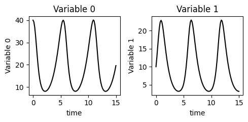

Welcome to procmodeling!
An easy way to solve and optimize your ODE system.
How to Solve Your ODE
FIRST STEP: Create a .txt file or a docstring variable containing the ODEs using Python equation syntax.
edo_Lotka_Volterra.txt
# Let's use the Lotka-Volterra ODEs where:
# y[0] = prey population
# y[1] = predator population
# dydt[0] = rate of change of prey over time
# dydt[1] = rate of change of predators over time
# Define the EDOs
dydt[0] = a * y[0] - b * y[0] * y[1]
dydt[1] = d * y[0] * y[1] - g * y[1]
# Define the parameters:
a = 1.0 # prey birth rate
b = 0.1 # predation rate
d = 0.075 # predator growth rate
g = 1.5 # predator death rate
Please note the following three rules:
- The names
y,t, anddy/dtare reserved keywords representing the dependent variables, time, and the ODE system, respectively; - Both
yanddy/dtare vectors, where[i](ibeing an integer) indicates the index of the dependent variable; - Respect Python’s equation syntax and make sure to define all the variables used in the system's equations. The order of expeditions does not matter.
SECOND STEP: Import and check your equations

THIRD STEP: Call the solve method after setting the time span and initial conditions
Example Output

How to Optimize Your EDO
FIRST STEP: After successfully solving your ODE, organize the data (which will be used for parameter fitting) into a DataFrame following the format below:
| Initial Conditions | Time | Conditions at time = j | ||||||
|---|---|---|---|---|---|---|---|---|
| \(y_0[1]\) | \(y_0[1]\) | ... | \(y_0[j]\) | t | \(y[0]\) | \(y[1]\) | ... | \(y[j]\) |
| y0[0]\(i\) | y0[1]\(i\) | ... | y0[j]\(i\) | j | y[0]\(i\) | y[1]\(i\) | ... | y[j]\(i\) |
| ... | ... | ... | ... | ... | ... | ... | ... | ... |
Note
This structure allows you to fit your ODE model using multiple initial conditions if needed.
SECOND STEP: Define the search space for the parameters and call the optimizer
Note
An example of optimizing the Lotka-Volterra ODE is available here